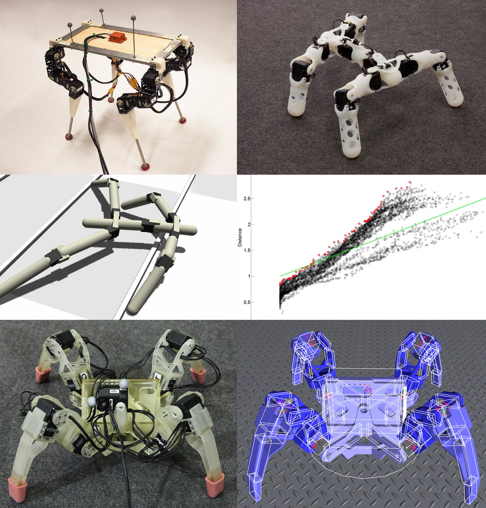
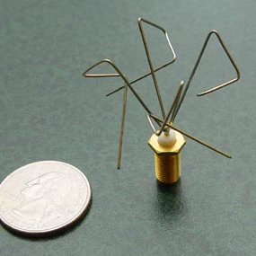
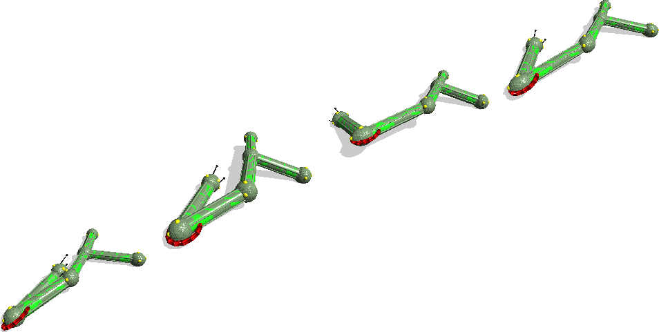

 The goal of this article is to introduce the field of evolutionary robotics. It is a subfield of robotics at the frontier of engineering and science that follows a radically alternative approach to robot design, namely evolution. The basic idea is to have robots evolve, rather than to design them. What does it mean, how does it work and what are its applications?
We can start answering these questions by contrasting evolution with human design process, traditionally employed by engineers. People typically build a solution by deliberately decomposing (analyzing) the problem into easier and smaller subproblems and then combining (synthesizing) their subsolutions. This method is commonly referred to as top-down or divide-and-conquer. eg. When designing car, we notice that it requires a drive, steering any many more; Then we design the drive: we notice than the engine requires fuel, ignition, ...; and so on towards smaller details.
In contrast to the above, evolution is a design process that is incremental, bottom-up and holistic. It starts from a minimal but already functioning system (organism, mechanism, etc.), then improves upon it, typically by adding further and/or elaborating extant mechanisms. Evolution is also organic, it operates without a deliberate plan and is only driven by a trend towards ever increasing efficiency (fitness). At the source of this increase are accumulating random modifications, which persist if they are beneficial.
Evolution finds its application in robotics, because it solves problems that are notoriously hard for human engineers; in particular, problems which exhibit complexity – that is, many parts that depend on each other and behave differently than in isolation – and so do not lend themselves to classical analysis into parts. Being mindless, the evolutionary process finds their solutions. It does not rely on analysis – prohibitively difficult at times – instead it relentlessly creates and tests great many variations of previously working instances. Evolution is not afraid of complexity. It often produces accordingly complex solutions itself.
“Evolutions finds its application” is an intended expression – evolution is a technique, one that is applied or delibarety brought about. It is a very general phenomenon, that takes place every time three conditions are met:
As a result of these three processes, a population of instances exhibits a trend towards increasingly efficient instances. Such instances replicate more often and become widespread in the population. Random modifications at replication occassionally produce still more efficient instances, which again spread in the population. In the living world, this process is termed natural selection. However, it is much more universal. It is not limited to nature and occurs also eg. in human culture (the universe of man's creations), science, technology, business.
In robotics one induces evolution by simulating, on a computer, a population of robots and their reproduction, variation and selection. In each step of the simulation a succesive generation of robots is generated. Robots are simulated and their efficiency (fitness) is evaluated. Then the most efficient ones are replicated, with replication chance proportional to the evaluated efficiency and with random modifications. Efficiency is evaluated with respect to the problem that the evolution should solve, that is with respect to the features that the robot are intended to acquire. eg. If the problem is for the robot to walk, efficiency is evaluated as how long / how far the robot managed to walk in a test simulation. The evalution criteria is defined deliberately. It it what induces selective pressure (artifical selection) for the desired robot ability or feature.
 It is worth noting that the above algorithm to evolve solutions by simulating reproduction, variation and reproduction is not limited to robots. Such algorithms are termed genetic algorithms and are applied to various design and optimization problems. eg. NASA used a genetic algorithm to evolve a spaceship antenna that outperformed man-designed antennas.
Other than the above application in engineering, evolutionary robotics is also employed in science – in studies of human mind, intelligence, language, cognitive skills, etc. Some researches believe that understanding these phenomena directly and in their developed form is beyond reach. As products of evolution, they are very complex and quite unlike man-designed systems. Instead, the researchers strive to study their origins; specifically, by recreating their evolution in a simulation. This evokes the famous observation by T. Dobzhansky: “Nothing makes sense in biology except in the light of evolution”. Eg. In some studies of the origin of human language, robots are evolved to solve (have their fitness evaluated on) a task that requires them to cooperate. It is hoped that the robots evolve some preliminary forms of communication. This would give a detailed insight into a possible origin of language.
 In the related field of artificial intelligence, virtual creatures are simulated in a similar hope of recreating the origin of intelligence and complex life forms.